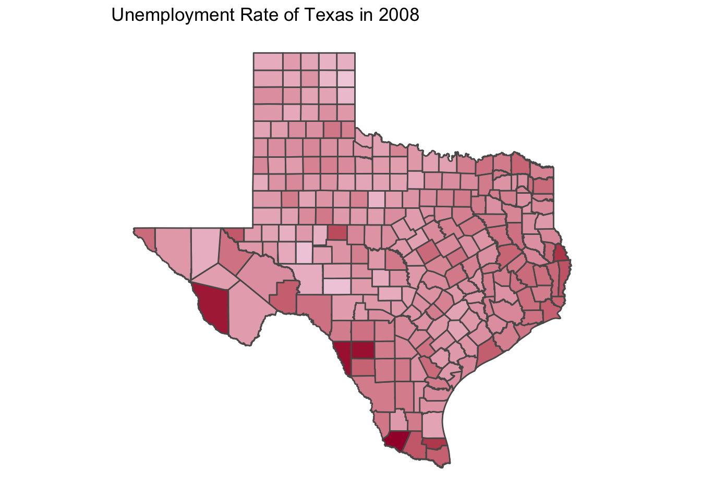
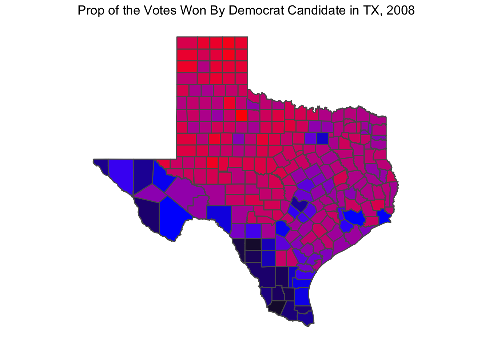

geospatial
Kuiyu Zhu
11/6/2020
# set up python env
library(reticulate)
use_python('/Library/Frameworks/Python.framework/Versions/3.7/bin/python3')## data preparing
# import packages
import pandas as pd
import xlrdpd.set_option('display.expand_frame_repr', False)
# election data
elec = pd.read_csv('countypres_2000-2016.csv')
elec.head()## year state state_po county FIPS office candidate party candidatevotes totalvotes version
## 0 2000 Alabama AL Autauga 1001.0 President Al Gore democrat 4942.0 17208 20191203
## 1 2000 Alabama AL Autauga 1001.0 President George W. Bush republican 11993.0 17208 20191203
## 2 2000 Alabama AL Autauga 1001.0 President Ralph Nader green 160.0 17208 20191203
## 3 2000 Alabama AL Autauga 1001.0 President Other NaN 113.0 17208 20191203
## 4 2000 Alabama AL Baldwin 1003.0 President Al Gore democrat 13997.0 56480 20191203# drop two columns which we do not need - 'office' & 'version'
del elec['office']
del elec['version']
# drop rows where year == "2000" and "2004"
elec = elec[elec['year'] != 2000]
elec = elec[elec['year'] != 2004]
# drop rows where candidate == 'Other'
elec = elec[elec['candidate'] != 'Other']# check party value counts and data shape
elec['party'].value_counts()## republican 9474
## democrat 9474
## Name: party, dtype: int64elec.shape## (18948, 9)# create a new column to show the proportion of the vote won by either the Democratic or Republican candidate
elec['voteprop'] = round(elec['candidatevotes'] / elec['totalvotes'], 4)
del elec['candidatevotes']
del elec['totalvotes']
elec = elec.rename(columns={"county": "NAME"})# to get datasets of each states (Texas, California, Pennsylvania)
elec_tx = elec[elec['state'] == 'Texas']
elec_ca = elec[elec['state'] == 'California']
elec_pa = elec[elec['state'] == 'Pennsylvania']
# I choose democrat candidate to visualize
elec_tx = elec_tx[elec_tx['party'] == 'democrat']
elec_ca = elec_ca[elec_ca['party'] == 'democrat']
elec_pa = elec_pa[elec_pa['party'] == 'democrat']# check null values of each datasets
null = [elec_tx.isnull().sum().sum(),elec_ca.isnull().sum().sum(),elec_pa.isnull().sum().sum()]
null## [0, 0, 0]elec_tx = elec_tx.astype({'FIPS': 'object'})
# seperate by year
elec_tx_2008 = elec_tx[elec_tx['year'] == 2008]
elec_tx_2012 = elec_tx[elec_tx['year'] == 2012]
elec_tx_2016 = elec_tx[elec_tx['year'] == 2016]
elec_ca_2008 = elec_ca[elec_ca['year'] == 2008]
elec_ca_2012 = elec_ca[elec_ca['year'] == 2012]
elec_ca_2016 = elec_ca[elec_ca['year'] == 2016]
elec_pa_2008 = elec_pa[elec_pa['year'] == 2008]
elec_pa_2012 = elec_pa[elec_pa['year'] == 2012]
elec_pa_2016 = elec_pa[elec_pa['year'] == 2016]# unemployment data
uepm = xlrd.open_workbook('Unemployment.xls')
uepm = uepm.sheet_by_index(0)# function: to grab infomation and create a dataframe
def dfGenerator(list_st):
list_st_0 = []
for i in list_st:
list_st_0.append(uepm.cell_value(i, 0))
s_st_0 = pd.DataFrame(list_st_0, columns=['FIPStxt'])
list_st_1 = []
for i in list_st:
list_st_1.append(uepm.cell_value(i, 1))
s_st_1 = pd.DataFrame(list_st_1, columns=['Stabr'])
list_st_2 = []
for i in list_st:
list_st_2.append(uepm.cell_value(i, 2))
s_st_2 = pd.DataFrame(list_st_2, columns=['NAME'])
list_st_41 = []
for i in list_st:
list_st_41.append(uepm.cell_value(i, 41))
s_st_41 = pd.DataFrame(list_st_41, columns=['uepm_rate_2008'])
list_st_57 = []
for i in list_st:
list_st_57.append(uepm.cell_value(i, 57))
s_st_57 = pd.DataFrame(list_st_57, columns=['uepm_rate_2012'])
list_st_73 = []
for i in list_st:
list_st_73.append(uepm.cell_value(i, 73))
s_st_73 = pd.DataFrame(list_st_73, columns=['uepm_rate_2016'])
uepm_st = pd.concat([s_st_0, s_st_1, s_st_2, s_st_41, s_st_57, s_st_73], axis=1)
# modify county column
uepm_st[['NAME', 'k']] = uepm_st['NAME'].str.split(",", 1, expand=True)
uepm_st = uepm_st.drop(['k'], axis = 1)
uepm_st[['NAME', 't']] = uepm_st['NAME'].str.split(' Count', 1, expand=True)
uepm_st = uepm_st.drop(['t'], axis = 1)
return uepm_st# CA dataset
list_ca = list(range(203,261))
uepm_ca = dfGenerator(list_ca)
# PA dataset
list_pa = list(range(2294,2361))
uepm_pa = dfGenerator(list_pa)
# TX dataset
list_tx = list(range(2578,2832))
uepm_tx = dfGenerator(list_tx)library(sf)
library(dplyr)
library(ggplot2)
options(scipen = 999)# visualization - Unemployment Rate of California in 2008
ca_shape_map = st_read('CA_Counties/CA_counties_TIGER2016.shp', stringsAsFactors = FALSE)## Reading layer `CA_Counties_TIGER2016' from data source `/Users/kuiyuzhu/Desktop/503pf/ANLY503_Portfolio/CA_Counties/CA_Counties_TIGER2016.shp' using driver `ESRI Shapefile'
## Simple feature collection with 58 features and 17 fields
## geometry type: MULTIPOLYGON
## dimension: XY
## bbox: xmin: -13857270 ymin: 3832931 xmax: -12705030 ymax: 5162404
## CRS: 3857ca_uepm = py$uepm_ca
ca_shape_and_uepm = inner_join(ca_shape_map, ca_uepm, by='NAME')
vis_ca_uepm_2008 = ggplot(ca_shape_and_uepm)+
geom_sf(aes(fill= uepm_rate_2008))+
scale_fill_gradient(low = '#f2d0df', high = '#a30034')+
labs(title='Unemployment Rate of California in 2008')
vis_ca_uepm_2008
# visualization - Unemployment Rate of California in 2012
vis_ca_uepm_2012 = ggplot(ca_shape_and_uepm)+
geom_sf(aes(fill= uepm_rate_2012))+
scale_fill_gradient(low = '#f2d0df', high = '#a30034')+
labs(title='Unemployment Rate of California in 2012')
vis_ca_uepm_2012
# visualization - Unemployment Rate of California in 2016
vis_ca_uepm_2016 = ggplot(ca_shape_and_uepm)+
geom_sf(aes(fill= uepm_rate_2016))+
scale_fill_gradient(low = '#f2d0df', high = '#a30034')+
labs(title='Unemployment Rate of California in 2016')
vis_ca_uepm_2016# visualization - Unemployment Rate of Texas in 2008
tx_shape_map = st_read('Texas_County_Boundaries-shp/County.shp', stringsAsFactors = FALSE)## Reading layer `County' from data source `/Users/kuiyuzhu/Desktop/503pf/ANLY503_Portfolio/Texas_County_Boundaries-shp/County.shp' using driver `ESRI Shapefile'
## Simple feature collection with 254 features and 10 fields
## geometry type: POLYGON
## dimension: XY
## bbox: xmin: -106.6462 ymin: 25.83722 xmax: -93.50781 ymax: 36.50039
## CRS: 4326colnames(tx_shape_map) <- c("FID", "CMPTRL_CNT", "CNTY_NM", "DPS_CNTY_N", "FIPStxt", "TXDOT_CNTY", "TXDOT_DIST", "GID", "SHAPE_Leng", "SHAPE_Area", "geometry")
tx_uepm = py$uepm_tx
tx_shape_and_uepm = inner_join(tx_shape_map, tx_uepm, by='FIPStxt')
vis_tx_uepm_2008 = ggplot(tx_shape_and_uepm)+
geom_sf(aes(fill= uepm_rate_2008))+
scale_fill_gradient(low = '#f2d0df', high = '#a30034')+
labs(title='Unemployment Rate of Texas in 2008')
vis_tx_uepm_2008# visualization - Unemployment Rate of Texas in 2012
vis_tx_uepm_2012 = ggplot(tx_shape_and_uepm)+
geom_sf(aes(fill= uepm_rate_2012))+
scale_fill_gradient(low = '#f2d0df', high = '#a30034')+
labs(title='Unemployment Rate of Texas in 2012')
vis_tx_uepm_2012# visualization - Unemployment Rate of Texas in 2016
vis_tx_uepm_2016 = ggplot(tx_shape_and_uepm)+
geom_sf(aes(fill= uepm_rate_2016))+
scale_fill_gradient(low = '#f2d0df', high = '#a30034')+
labs(title='Unemployment Rate of Texas in 2016')
vis_tx_uepm_2016# visualization - Unemployment Rate of Pennsylvania in 2008
pa_shape_map = st_read('PA_Counties_clip.shp/PA_Counties_clip.shp', stringsAsFactors = FALSE)## Reading layer `PA_Counties_clip' from data source `/Users/kuiyuzhu/Desktop/503pf/ANLY503_Portfolio/PA_Counties_clip.shp/PA_Counties_clip.shp' using driver `ESRI Shapefile'
## Simple feature collection with 67 features and 13 fields
## geometry type: MULTIPOLYGON
## dimension: XY
## bbox: xmin: -80.5199 ymin: 39.71989 xmax: -74.7009 ymax: 42.26733
## CRS: 4269pa_uepm = py$uepm_pa
pa_shape_and_uepm = inner_join(pa_shape_map, pa_uepm, by='NAME')
vis_pa_uepm_2008 = ggplot(pa_shape_and_uepm)+
geom_sf(aes(fill= uepm_rate_2008))+
scale_fill_gradient(low = '#f2d0df', high = '#a30034')+
labs(title='Unemployment Rate of Pennsylvania in 2008')
vis_pa_uepm_2008# visualization - Unemployment Rate of Pennsylvania in 2012
vis_pa_uepm_2012 = ggplot(pa_shape_and_uepm)+
geom_sf(aes(fill= uepm_rate_2012))+
scale_fill_gradient(low = '#f2d0df', high = '#a30034')+
labs(title='Unemployment Rate of Pennsylvania in 2012')
vis_pa_uepm_2012# visualization - Unemployment Rate of Pennsylvania in 2016
vis_pa_uepm_2016 = ggplot(pa_shape_and_uepm)+
geom_sf(aes(fill= uepm_rate_2016))+
scale_fill_gradient(low = '#f2d0df', high = '#a30034')+
labs(title='Unemployment Rate of Pennsylvania in 2016')
vis_pa_uepm_2016# visualization - Proportion of the Votes Won By Democrat Candidate in California, 2008
elec_ca_08 = py$elec_ca_2008
ca_shape_and_elec_08 = inner_join(ca_shape_map, elec_ca_08, by='NAME')
vis_ca_elec_2008 = ggplot(ca_shape_and_elec_08)+
geom_sf(aes(fill= voteprop))+
scale_fill_gradient2(low = "red", mid = "blue", high = "black", midpoint = 0.5, guide = "legend")+
labs(title='Prop of the Votes Won By Democrat Candidate in CA, 2008')
vis_ca_elec_2008# visualization - Proportion of the Votes Won By Democrat Candidate in California, 2012
elec_ca_12 = py$elec_ca_2012
ca_shape_and_elec_12 = inner_join(ca_shape_map, elec_ca_12, by='NAME')
vis_ca_elec_2012 = ggplot(ca_shape_and_elec_12)+
geom_sf(aes(fill= voteprop))+
scale_fill_gradient2(low = "red", mid = "blue", high = "black", midpoint = 0.5, guide = "legend")+
labs(title='Prop of the Votes Won By Democrat Candidate in CA, 2012')
vis_ca_elec_2012
# visualization - Proportion of the Votes Won By Democrat Candidate in California, 2016
elec_ca_16 = py$elec_ca_2016
ca_shape_and_elec_16 = inner_join(ca_shape_map, elec_ca_16, by='NAME')
vis_ca_elec_2016 = ggplot(ca_shape_and_elec_16)+
geom_sf(aes(fill= voteprop))+
scale_fill_gradient2(low = "red", mid = "blue", high = "black", midpoint = 0.5, guide = "legend")+
labs(title='Prop of the Votes Won By Democrat Candidate in CA, 2016')
vis_ca_elec_2016# visualization - Proportion of the Votes Won By Democrat Candidate in Texas, 2008
tx_shape_map = st_read('Texas_County_Boundaries-shp/County.shp', stringsAsFactors = FALSE)## Reading layer `County' from data source `/Users/kuiyuzhu/Desktop/503pf/ANLY503_Portfolio/Texas_County_Boundaries-shp/County.shp' using driver `ESRI Shapefile'
## Simple feature collection with 254 features and 10 fields
## geometry type: POLYGON
## dimension: XY
## bbox: xmin: -106.6462 ymin: 25.83722 xmax: -93.50781 ymax: 36.50039
## CRS: 4326colnames(tx_shape_map) <- c("FID", "CMPTRL_CNT", "CNTY_NM", "DPS_CNTY_N", "FIPS", "TXDOT_CNTY", "TXDOT_DIST", "GID", "SHAPE_Leng", "SHAPE_Area", "geometry")
elec_tx_08 = py$elec_tx_2008
elec_tx_08$FIPS = as.character(as.integer(unlist(elec_tx_08$FIPS)))
tx_shape_and_elec_08 = inner_join(tx_shape_map, elec_tx_08, by='FIPS')
vis_tx_elec_2008 = ggplot(tx_shape_and_elec_08)+
geom_sf(aes(fill= voteprop))+
scale_fill_gradient2(low = "red", mid = "blue", high = "black", midpoint = 0.5, guide = "legend")+
labs(title='Prop of the Votes Won By Democrat Candidate in TX, 2008')
vis_tx_elec_2008# visualization - Proportion of the Votes Won By Democrat Candidate in Texas, 2012
elec_tx_12 = py$elec_tx_2012
elec_tx_12$FIPS = as.character(as.integer(unlist(elec_tx_12$FIPS)))
tx_shape_and_elec_12 = inner_join(tx_shape_map, elec_tx_12, by='FIPS')
vis_tx_elec_2012 = ggplot(tx_shape_and_elec_12)+
geom_sf(aes(fill= voteprop))+
scale_fill_gradient2(low = "red", mid = "blue", high = "black", midpoint = 0.5, guide = "legend")+
labs(title='Prop of the Votes Won By Democrat Candidate in TX, 2012')
vis_tx_elec_2012# visualization - Proportion of the Votes Won By Democrat Candidate in Texas, 2016
elec_tx_16 = py$elec_tx_2016
elec_tx_16$FIPS = as.character(as.integer(unlist(elec_tx_16$FIPS)))
tx_shape_and_elec_16 = inner_join(tx_shape_map, elec_tx_16, by='FIPS')
vis_tx_elec_2016 = ggplot(tx_shape_and_elec_16)+
geom_sf(aes(fill= voteprop))+
scale_fill_gradient2(low = "red", mid = "blue", high = "black", midpoint = 0.5, guide = "legend")+
labs(title='Prop of the Votes Won By Democrat Candidate in TX, 2016')
vis_tx_elec_2016# visualization - Proportion of the Votes Won By Democrat Candidate in Pennsylvania, 2008
elec_pa_08 = py$elec_pa_2008
pa_shape_and_elec_08 = inner_join(pa_shape_map, elec_pa_08, by='NAME')
vis_pa_elec_2008 = ggplot(pa_shape_and_elec_08)+
geom_sf(aes(fill= voteprop))+
scale_fill_gradient2(low = "red", mid = "blue", high = "black", midpoint = 0.5, guide = "legend")+
labs(title='Prop of the Votes Won By Democrat Candidate in PA, 2008')
vis_pa_elec_2008# visualization - Proportion of the Votes Won By Democrat Candidate in Pennsylvania, 2012
elec_pa_12 = py$elec_pa_2012
pa_shape_and_elec_12 = inner_join(pa_shape_map, elec_pa_12, by='NAME')
vis_pa_elec_2012 = ggplot(pa_shape_and_elec_12)+
geom_sf(aes(fill= voteprop))+
scale_fill_gradient2(low = "red", mid = "blue", high = "black", midpoint = 0.5, guide = "legend")+
labs(title='Prop of the Votes Won By Democrat Candidate in PA, 2012')
vis_pa_elec_2012
# visualization - Proportion of the Votes Won By Democrat Candidate in Pennsylvania, 2016
elec_pa_16 = py$elec_pa_2016
pa_shape_and_elec_16 = inner_join(pa_shape_map, elec_pa_16, by='NAME')
vis_pa_elec_2016 = ggplot(pa_shape_and_elec_16)+
geom_sf(aes(fill= voteprop))+
scale_fill_gradient2(low = "red", mid = "blue", high = "black", midpoint = 0.5, guide = "legend")+
labs(title='Prop of the Votes Won By Democrat Candidate in PA, 2016')
vis_pa_elec_2016